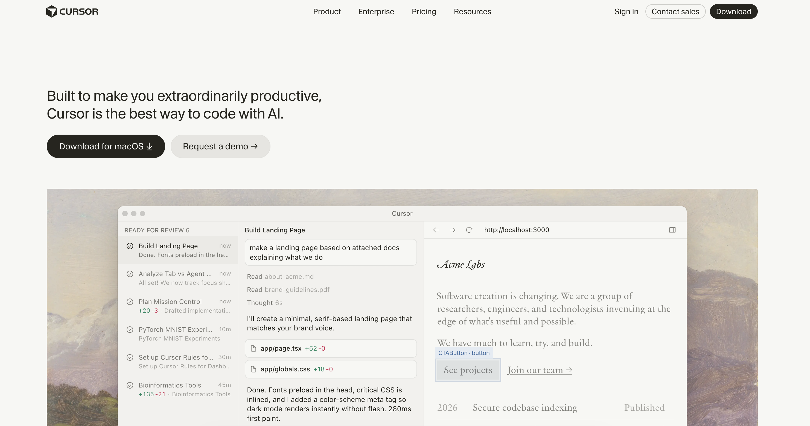
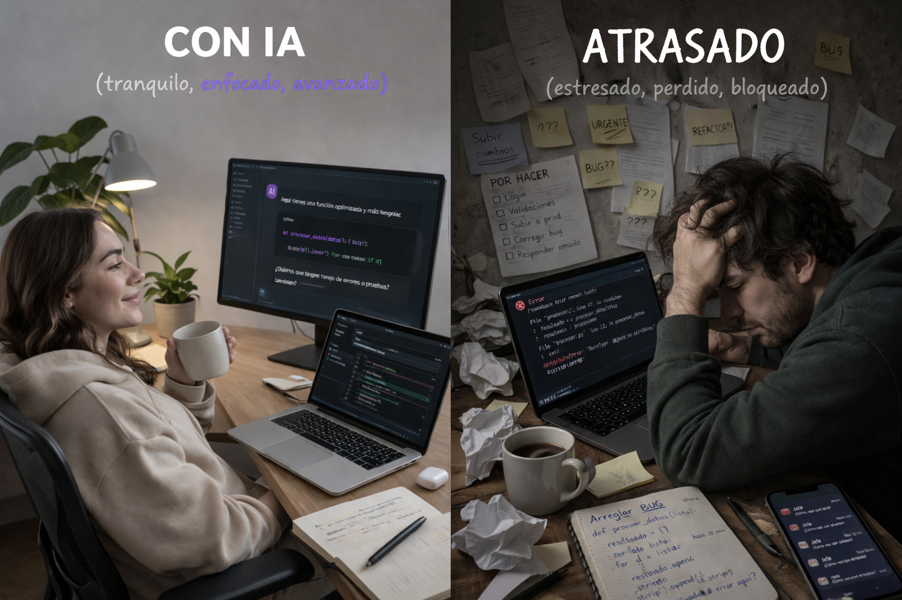

flowchart LR
A[Idea] --> B[Code] --> C[Debug] --> D[Test] --> E[Deploy]
AI((IA)):::ai
AI --- A
AI --- B
AI --- C
AI --- D
AI --- E
classDef default fill:#1f2937,color:#ffffff,stroke:#94a3b8,stroke-width:1.5px;
classDef ai fill:#ff8c00,color:#000,stroke:#fff,stroke-width:2px;
Ya no programas solo
Cómo usar agentes de IA en tu proyecto (y no quedarte atrás)
DTD
2026-03-26
Bloque 1
Programar es fácil

Pero…
todo lo demás
- debug
- arquitectura
- documentación
- pruebas
- organizar ideas
- (y mil cosas más)
Caos total

Y lo estás haciendo solo
Pero esto ya no funciona así
Algo cambió
Ya no compites solo
Compites contra developers con IA

Y ellos van más rápido
Hoy
la mayoría de los developers ya usa IA
60–75%
Y en Chile
ya lo están pidiendo
No es aprender IA
Es trabajar distinto
Como Git
como Docker
Si dos personas saben lo mismo
pero una resuelve en la mitad del tiempo
¿a quién eliges?
No necesitas nada especial
Solo tu correo USM
Lo puedes activar hoy
En menos de 10 minutos
Te muestro cómo
Esto parte acá

Con esto desbloqueas
herramientas que ya usan hoy
Esto no es solo Copilot
Esto escala
a todo tu proyecto

Herramientas como Cursor
no usarlas
ya es una desventaja
Pruébalo tú mismo
ya son estándar en equipos reales
No es magia
es contexto real del proyecto

Esto haces todos los días
- escribir código
- entender código
- refactorizar
- debuggear
- documentar
- diseñar arquitectura
En todo tu workflow
No es una herramienta
es un stack
No todos la usan igual
depende de tu rol
Backend
- entender endpoints
- refactorizar servicios
- generar tests
Frontend
- generar componentes
- integrar APIs
- iterar rápido
Data / IA
- explorar datos
- prototipar modelos
- limpiar datasets
El stack real
- IDE con IA
- LLMs (ChatGPT, Claude)
- herramientas específicas (tests, docs, debugging)
Te muestro en vivo
(DEMO EN VIVO)
Esto no reemplaza tu trabajo
cambia cómo lo haces
y eso cambia el resultado
Funciona
pero es inseguro
Esto compila
¿Cuál es el problema?
Está mal
deuda técnica
Problemas invisibles
- malos patrones
- ineficiencias
- vulnerabilidades
Tu rol
no es generar
es revisar
La IA propone soluciones
Lo que la IA no ve
- tu empresa
- tus datos
- tu contexto
las decisiones importantes
no son automáticas
decisiones reales
- monolito vs microservicios
- consistencia
- disponibilidad
eso sigue siendo humano
confiar sin revisar
es un riesgo
La ventaja
no es usar más IA
es saber cuándo confiar… y cuándo no
Bloque 5
Preguntas
¿Me van a reemplazar?
No en el corto plazo
Pero sí van a reemplazar
a quienes no usen IA

¿Copilot o Cursor?
Copilot
flujo diario
Cursor
problemas complejos
¿Vale la pena aprender prompting?
Sí, pero lo central es otro
- dar contexto
- definir stack
- restricciones
- usar el código del proyecto
La IA acelera
Eso es tu responsabilidad
con esto ya puedes
- usar herramientas reales
- integrarlas en tu workflow
- entender dónde ayudan